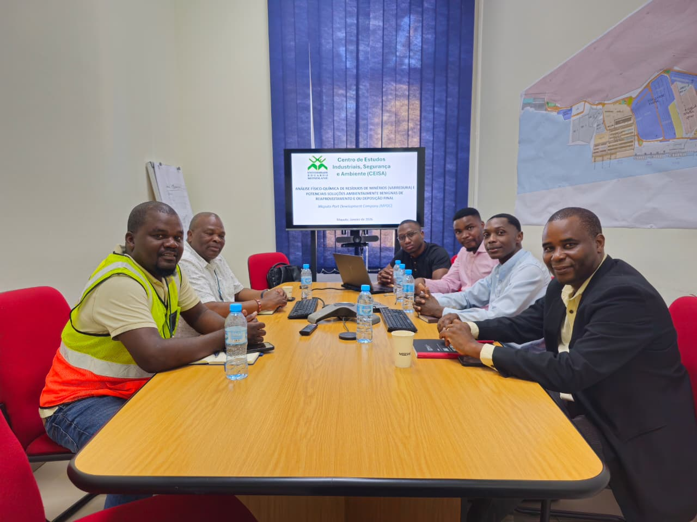

Insight
SIG aplicado à gestão ambiental
Como dados geográficos ajudam equipas técnicas a reduzir incerteza em campo e em relatório.
Abrir temaNotas curtas sobre SIG, ambiente, resíduos, segurança ocupacional e formação técnica.
Como dados geográficos ajudam equipas técnicas a reduzir incerteza em campo e em relatório.
Abrir tema
Planos de resíduos ganham valor quando conectam diagnóstico, operação e monitorização.
Abrir tema
Cursos mais úteis quando usam casos reais, dados locais e ferramentas acessíveis.
Abrir temaSem ruído: apenas actualizações relevantes sobre cursos, serviços e conteúdos técnicos.